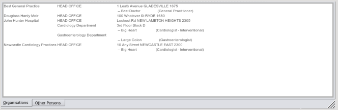

Other Contacts
As previously mentioned, in EasyGP, although all the actual data is kept in the same tables within the database, for the purposes
of data entry, there is a functional separation of contact information into three sections -
Patients ,
Practice Staff, and
Other Contacts
Other contacts are considered to be
- Organisations and their employees, and this includes your own general practice, although you must enter staff specific details such as logon names, security levels etc. within the staff module, as these are specific to your organisation alone.
- Persons not employed by an organisation, for example a 'lone practitioner' or 'specialist' who may have their own rooms but are not part of a company per se.

You can select either section from the tab at the bottom of this screen.